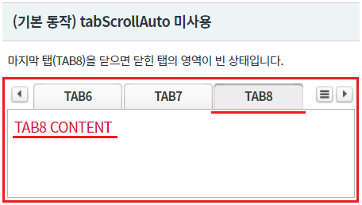
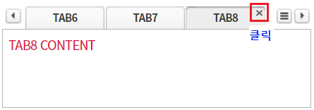
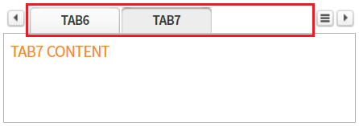
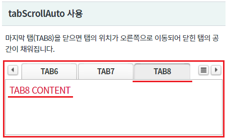
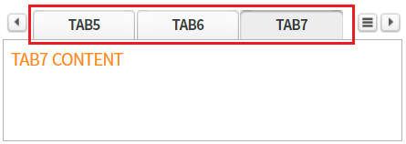
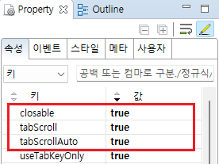
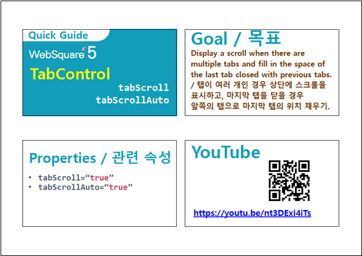

[TabControl] 탭을 닫았을 때 탭 영역에 보이는 탭의 수를 유지하는 기능 설정하기
1개요
TabControl의 속성 tabScrollAuto 예제입니다. 속성 tabScrollAuto은 속성 tabScroll이 "true"로 설정되어야 동작됩니다. tabScrollAuto은 탭 영역을 오른쪽 끝까지 이동한 상태에서 탭을 닫았을 때, 남아있는 탭으로 탭 영역에 보이는 탭의 개수를 유지시켜 주는 기능을 제공합니다.
2구현된 기능
(기본 동작) tabScrollAuto 미사용
tabScrollAuto 사용
3예제 테스트 방법
탭의 영역을 마지막(오른쪽 끝) 탭을 선택하고, 탭 닫기 버튼을 클릭하여 닫았을 때 닫힌 탭의 영역을 비교합니다.
3.1(기본 동작) tabScrollAuto 미사용
- STEP1. 초기 상태를 확인합니다.
영역 [(기본 동작) tabScrollAuto 미사용]의 TabControl의 탭 영역에 출력되지 않은 탭이 있고, 마지막 탭 "TAB8"이 선택되어 있습니다.
[브라우저(Chrome) 실행 예시]

- STEP2. 마지막 탭을 닫습니다.
마지막 탭 "TAB8"의 닫기 버튼을 클릭하여 탭을 닫습니다.
[브라우저(Chrome) 실행 예시]

- STEP3. 실행 결과를 확인합니다.
닫힌 영역이 빈 공간으로 유지됩니다.
(처음 그려진 상태에서 탭만 닫힌 상태)
[브라우저(Chrome) 실행 예시]

3.2tabScrollAuto 사용
- STEP1. 초기 상태를 확인합니다.
영역 [tabScrollAuto 사용]의 TabControl의 탭 영역에 출력되지 않은 탭이 있고, 마지막 탭 "TAB8"이 선택되어 있습니다.
[브라우저(Chrome) 실행 예시]

- STEP2. 마지막 탭을 닫습니다.
마지막 탭 "TAB8"의 닫기 버튼을 클릭하여 탭을 닫습니다.
[브라우저(Chrome) 실행 예시]

- STEP3. 실행 결과를 확인합니다.
닫힌 탭 영역이 남아 있는 이전 탭으로 채워집니다.
(탭 영역이 닫힌 탭 만큼 오른쪽으로 이동한 것과 같이)
[브라우저(Chrome) 실행 예시]

4구현 예시
4.1tabScrollAuto 사용 설정하기
TabControl의 속성을 정의합니다.
[필수] tabScroll="true" //탭 영역에 탭들의 이동과 선택의 편의성을 제공하는 기능 사용 설정
[필수] tabScrollAuto="true" //tabScroll이 오른쪽 끝까지 이동한 상태에서 tab을 닫았을 때, 남아있는 tab이 있을 경우 화면에 보이는 tab의 개수를 유지시켜 주는 기능 사용
[선택] closable="true" //[default:false, true] tab의 닫기 버튼을 활성화
그림 1.웹스퀘어5 SP5 스튜디오의 Property View(속성창) 예시

[소스 코드 예시]
<!-- tabControl 소스 본문 예시 --> <w2:tabControl tabScroll="true" tabScrollAuto="true" closable="true" id="tac_exam2"> <!-- 중략 --> </w2:tabControl>
5주요 API
tabScroll
tabScrollAuto
closable
6참고 문서
[웹스퀘어5 SP5 개발 가이드] TabControl
링크 : https://docs1.inswave.com/sp5_user_guide/2059d4ce88b2fc16#0eeccc9d7fde2d33
[웹스퀘어5 SP5 개발 가이드] TabControl - 탭을 닫을 경우 남은 탭을 자동으로 앞으로 이동 (tabScrollAuto="true")
링크 : https://docs1.inswave.com/sp5_user_guide/2059d4ce88b2fc16#c4b8608406650f99
7참고 동영상
TabControl - 탭을 닫을 경우 남은 탭을 자동으로 앞으로 이동 (tabScrollAuto="true")
링크 : https://youtu.be/nt3DExi4iTs
